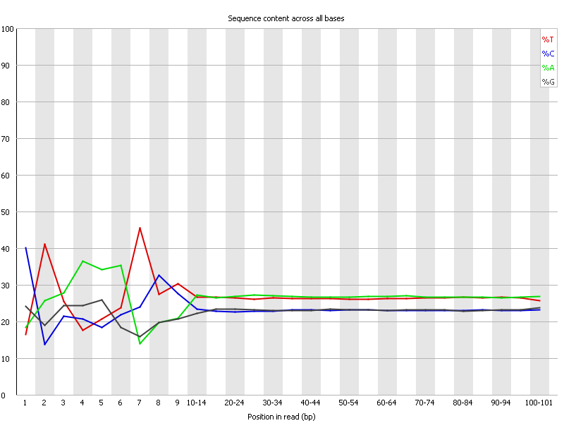
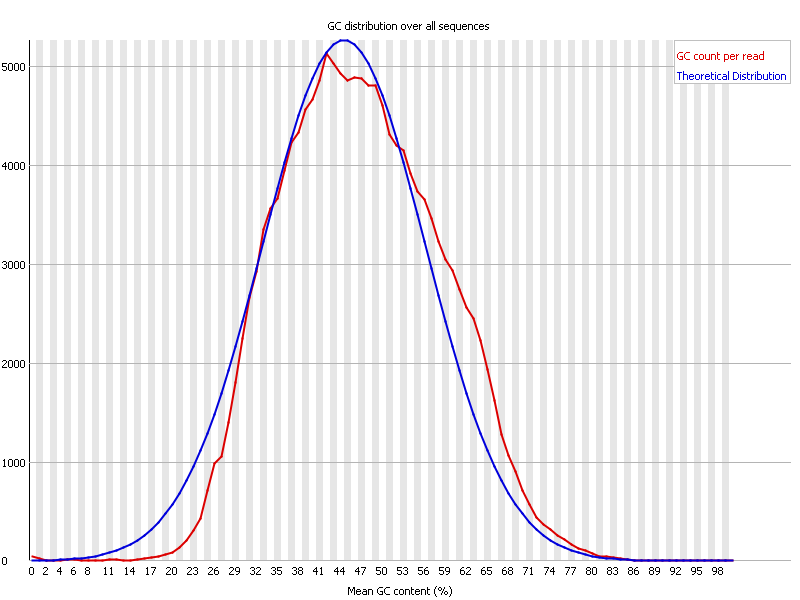

![[OK]](Icons/tick.png) Basic Statistics
Basic Statistics
| Measure | Value |
|---|---|
| Filename | RNAseq.fastq |
| File type | Conventional base calls |
| Encoding | Sanger / Illumina 1.9 |
| Total Sequences | 153557 |
| Filtered Sequences | 0 |
| Sequence length | 101 |
| %GC | 46 |
![[FAIL]](Icons/error.png) Per base sequence quality
Per base sequence quality
Per sequence quality scores
Per base sequence content

Per base GC content
Per sequence GC content

Per base N content
Sequence Length Distribution
![[WARN]](Icons/warning.png) Sequence Duplication Levels
Sequence Duplication Levels
Overrepresented sequences
| Sequence | Count | Percentage | Possible Source |
|---|---|---|---|
| GTTTATTTGAATTTTTGGTATCTTTAAAGCTGAACTTAGATTCATTTTCT | 315 | 0.2051355522704924 | No Hit |
| CTAAAATTCATTTTGTTAAGTCTTATACTAGTTAATTCATTATGCAAAAG | 202 | 0.13154724304329987 | No Hit |
Kmer Content
| Sequence | Count | Obs/Exp Overall | Obs/Exp Max | Max Obs/Exp Position |
|---|---|---|---|---|
| AAAAA | 63625 | 3.0921767 | 9.875067 | 2 |
| TTTTT | 60400 | 3.0083098 | 5.651855 | 2 |
| CTTCT | 41320 | 2.6783879 | 5.59602 | 5 |
| CTCCT | 35065 | 2.5929892 | 5.812241 | 8 |
| TCTTC | 37445 | 2.4272077 | 5.6923738 | 7 |
| GAAGA | 37125 | 2.4145603 | 5.2671733 | 2 |
| AAGAA | 42395 | 2.3835194 | 5.4255857 | 2 |
| CAGCT | 31635 | 2.3490317 | 5.329326 | 3 |
| AGAAA | 40995 | 2.3048089 | 7.0069127 | 2 |
| CCAGG | 26640 | 2.2771568 | 5.3499556 | 8 |
| CTGGA | 30105 | 2.2557118 | 6.721901 | 1 |
| TCCAG | 29450 | 2.1867864 | 8.934587 | 7 |
| CTCCA | 29055 | 2.1380503 | 7.7474446 | 6 |
| CTGGG | 24490 | 2.1227622 | 6.6832094 | 1 |
| CTTCA | 30525 | 1.9689695 | 6.599958 | 1 |
| AAAGA | 34080 | 1.9160359 | 5.4255857 | 2 |
| TCCTG | 25380 | 1.8938365 | 5.1409206 | 7 |
| TCTCC | 25445 | 1.8816088 | 6.422168 | 7 |
| CTGGC | 21885 | 1.8799015 | 5.165182 | 1 |
| GCTCC | 22055 | 1.8774642 | 5.6149983 | 5 |
| GAAAA | 33300 | 1.872183 | 5.5889893 | 1 |
| CAGAA | 28030 | 1.8066363 | 5.4071593 | 1 |
| AAAAT | 36660 | 1.7904359 | 7.934155 | 3 |
| CTTGG | 22485 | 1.6930419 | 6.2072487 | 1 |
| CTCAG | 22780 | 1.6915108 | 8.245783 | 1 |
| CCACC | 20030 | 1.6814799 | 5.9465537 | 8 |
| CTGAA | 25860 | 1.674966 | 6.784324 | 1 |
| TCTGC | 21900 | 1.6341615 | 5.937402 | 7 |
| CTGAG | 21595 | 1.6180733 | 5.813536 | 1 |
| TTCAT | 28175 | 1.5930649 | 5.3494096 | 7 |
| CAAAA | 28130 | 1.5672916 | 5.160465 | 1 |
| TTCCA | 22805 | 1.4710022 | 5.508047 | 6 |
| AAGAT | 24520 | 1.3853334 | 6.54819 | 3 |
| AAAAC | 24745 | 1.3786929 | 5.160633 | 3 |
| CTTGA | 21065 | 1.3710988 | 6.5336075 | 1 |
| TCCAC | 18575 | 1.3668659 | 6.7120724 | 7 |
| AAATT | 27720 | 1.3604711 | 5.4741096 | 4 |
| GTTTT | 22530 | 1.2917682 | 5.22705 | 1 |
| GAAAT | 22500 | 1.2712073 | 5.58925 | 3 |
| TTTGA | 21975 | 1.253783 | 5.3425984 | 6 |
| TTGAA | 21405 | 1.2152871 | 5.8398438 | 7 |
| ATTCA | 20125 | 1.1323367 | 6.1694984 | 6 |
| ATCCA | 17545 | 1.1261774 | 7.629943 | 6 |
| TCCAA | 17460 | 1.1207216 | 5.1385336 | 7 |
| AATCT | 19810 | 1.1146133 | 5.2394667 | 5 |
| AAATC | 19140 | 1.0716472 | 5.4032183 | 4 |
| AGATC | 15785 | 1.0224029 | 6.062117 | 4 |
| AATCC | 14250 | 0.91467816 | 5.4480066 | 5 |